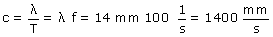

|
Un diapasón es una horquilla metálica
que vibra con una cierta frecuencia al ser golpeado, en este caso
vibra con una frecuencia de 100 Hz. Mediante una punta esta vibración
se transmite a la superficie del agua provocando una onda cuya frecuencia
es: 100 Hz |
En un período la onda avanza una longitud de onda, por tanto la velocidad de propagación es:
